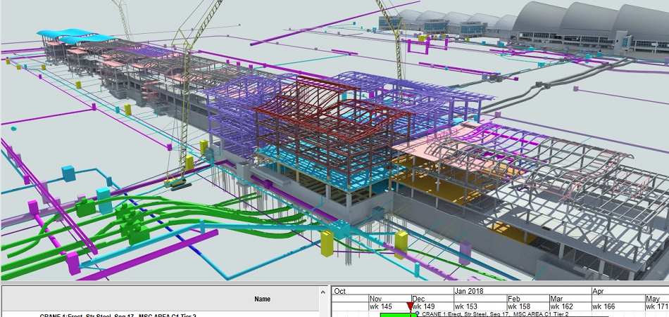
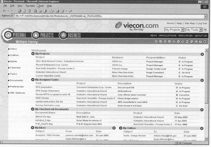
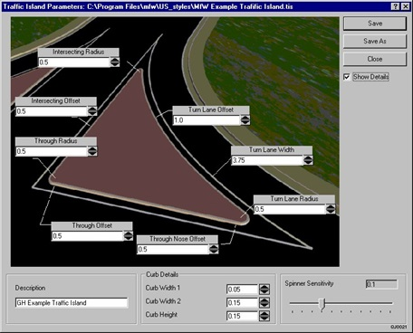

第10章：Bentley Systems Incorporated

作者注：在其他章节中，人们通常使用姓氏来称呼个人，但在本章中，五个 Bentley 兄弟使用名字来称呼。术语“Bentley”指的是公司，而不是个人。我在 1994 年至 2003 年期间定期担任 Bentley Systems Incorporated 的顾问。本章的部分内容基于个人经验。
Intergraph 在 1980 年代初期的一个主要客户是杜邦在特拉华州威明顿的工程部门。Keith Bentley 在获得特拉华大学电气工程学士学位和佛罗里达大学硕士学位后，进入杜邦工作。杜邦正在使用其 Intergraph 系统为其工艺厂生产电气图。但由于增加更多容量的高单价成本，使用受到限制。
Keith相信有一种成本更低的替代方案，并开始利用自己的空余时间开发了一个名为PseudoStation的软件包，该软件包可以让用户从低成本的DEC VT-100终端（配备了图形卡或Tektronix存储管终端）访问Intergraph的CAD软件。当杜邦的设计师们想要简单地更改现有图纸上的一些文本时，PseudoStation被证明是特别具有成本效益的。
1983年，Keith离开杜邦，与他的兄弟Barry一起在加利福尼亚州的一家名为Dynamic Solutions的公司工作。在离开杜邦之前，Keith与公司谈判达成了一项协议，根据该协议，他将获得该软件的营销权，作为回报，他将为公司的PseudoStation用户提供技术支持。在前往加利福尼亚的途中，Keith在亨茨维尔(Huntsville)停留，并将软件提供给了Intergraph。根据Keith的说法，“我本可以以5000美元的价格将[PseudoStation]卖给Intergraph，然后就可以了。[我没有这样做]是一系列幸运的巧合之一……”[1]。1983年Keith加入Dynamic Solutions后，该软件在亨茨维尔(Huntsville)的Intergraph用户会议上首次公开展示。
洛杉矶拥有大量的Intergraph用户，很快Keith和Barry就为PseudoStation找到了一个乐于接受的听众。Keith成立了Bentley Systems公司，继续开发该软件，并安排Dynamic Solutions代销该软件包，以换取他在后者公司软件的工作。PseudoStation的实际销售始于1984年6月。
此时，Keith相信他可以在IBM PC/AT上完成Intergraph在VAX上的工作。这个新版本的软件很快被称为MicroStation，并在1985年春季在佛罗里达州奥兰多的Intergraph用户会议的一台康柏286上展示[2]。不久，Keith和Barry出售了他们在Dynamic Solutions的股份，并搬回宾夕法尼亚州，最初在费城，然后在Lionville，随后搬到Exton。当时他们已经销售了350份基于终端的PseudoStation。Scott Bentley加入了BSI，处理公司的业务端，随后又加入了第四个兄弟Ray Bentley。
1987年1月，Intergraph以300万美元购买了Bentley Systems 50%的股份，并宣布MicroStation将在UNIX和PC平台上销售。成立了一个四人董事会，Intergraph占据两个董事席位，Keith和Barry Bentley占据另外两个。这种安排的问题是，每个当事方都拥有公司的50%股份并拥有半数董事会席位。许多合资企业会分配类似于49/51的比例，以便有明确的控股权。这几年后对Bentley来说会成为一个问题。
到1989年中期，已经有多个版本的MicroStation在销售：[3]
- MicroStation PC 适用于基于DOS的个人计算机。
- MicroStation MAC 适用于Apple Macintosh II工作站。
- MicroStation 32 适用于UNIX工作站，包括由Intergraph生产的工作站。
- MicroStation GIS，也适用于32位Unix工作站。
还开发了MicroStation的OS/2版本，主要是根据一个中西部的交通部门的要求。根据Keith的说法，公司在该项目上的开发投入比任何其他项目的回报率都低。不清楚这个交通部门是否曾使用过该软件的OS/2版本。[4]
MicroStation最主要的吸引点是其紧密地模仿了Intergraph的IGDS命令结构。正如Joel Orr博士所说：“如果你熟悉IGDS，你在使用MicroStation时将感到非常自在。实际上，你可能会对MicroStation完整实现IGDS的程度感到惊讶。”。然而，Orr继续批评了软件的用户界面。“如果你从未使用过IGDS，MicroStation的人机界面需要一些时间来适应。该系统是为生产而设计的。你可以进行草图、设计、尝试，但其主要特点是速度、功率和易用性（与易学性形成对比）”。[5]
此时，许多行业观察家（如Ed Forrest）认为，由于其用户界面，苹果Macintosh是未来的机器，尤其是对于建筑师和工程师。根据Forrest的说法：“MicroStation Mac软件是一个新的、原创的、价格适中、性能卓越的模型设计和草图自动化领域的软件。目前我所知道的没有任何软件可以与之媲美。该软件的行为就像Macintosh专为其设计一样；而Macintosh则表现得好像一款配得上其作为“人性化”工程工作站的能力的软件终于来了。”[6]
当时，相比鼠标驱动的Macintosh，MS-DOS PC和UNIX工作站的界面更加依赖于键盘操作。把MicroStation移植到Macintosh上当时看起来是一个明智的举动。然而，这个市场从未真正起飞，主要是因为苹果公司从未投入足够的市场营销和硬件开发资源。对于Bentley来说，一个潜在的问题是，在其他软件供应商提出类似计划的时候，公司计划在Macintosh版本的软件中安装硬件锁可能会遭到客户的反感。
到了1989年夏季，有20000份MicroStation正在使用中。当时它的价格为3000美元，与AutoCAD相当。MicroStation随后于1992年初移植到HP 700系列工程工作站以及其他UNIX机器上。
Bentley公司变得更加实质化
自从Intergraph在1987年开始销售Bentley的MicroStation软件，Bentley基本上保持在背景中，专注于软件开发。该公司很少花费精力在创建媒体上让Bentley成为一个商业实体。这种情况在1992年夏季开始改变。在那一年的A/E/C SYSTEMS会议之后不久，Bentley邀请了几乎所有覆盖CAD行业的出版物代表，来到它位于宾夕法尼亚州埃克斯顿（Exton）的总部。虽然有一些Intergraph的高管在场，但该事件基本上是由Bentley的员工和经理组织的。
尽管一些以AutoCAD为中心的出版物的编辑在场，但该公司非常公开地表达了其未来软件产品的计划。当时还没有迹象表明Intergraph和Bentley之间的紧密关系将在两年内爆炸。然而，由Keith Bentley领导的Bentley高管明确表示，AutoCAD被视为主要的竞争产品。
1992年还标志着Bentley开始更加专注于与AutoCAD共存。该公司增加了MicroStation的功能，可以直接使用Marcomp AutoDirect工具包导入AutoCAD .dwg文件。Marcomp是一家专门从事.dwg文件格式的反向工程的小型软件公司。它随后在1997年被Visio收购。称为AutoCAD Access，它作为免费升级包装在几个其他的MicroStation增强功能中，供现有的MicroStation Release 4用户使用。Bentley和Intergraph将这个升级称为MicroStation Nexus。 Bentley越来越专注于与Autodesk竞争的进一步迹象是，该公司支持一本针对正在转向MicroStation的AutoCAD用户的书籍。这本名为《AutoCAD用户的MicroStation》的书是由Frank Conforti和Ralph Grabowski撰写的。下一步是Intergraph为AutoCAD用户启动的一项交换计划。每个交换的许可证售价为500美元，客户将获得一份MicroStation、MicroStation Nexus和该书的副本。
1992年，Intergraph公司销售了价值7900万美元的MicroStation。1993年中期，MicroStation 5版本发布，价格为3,790美元，这个版本包括了大量的开发工作，带来了以下主要的增强功能：
- 将软件移植到Windows NT平台上的Intel平台，并承诺支持Intergraph的NT在Clipper工作站的Windows NT实现上，预计在1993年晚些时候推出。
- 具有写入 .dwg 文件以及读取的能力。
- 用户界面增强，包括将“工作区壳体”中的自定义功能分组，适用于不同的用户和应用程序。
- 基于超文本的在线用户文档。
- 绘图增强功能，包括联想填充和持续几何约束。
- 复合矢量和光栅文档以及光栅编辑功能。
- 新的曲面建模功能，包括扩展的NURBS曲面使用。
- 改进的可视化工具，包括模式映射。
在当时，我认为相对于当时的AutoCAD版本，对于花费的资金，MicroStation是更好的选择。[7]
Bentley与Intergraph分道扬镳
到1992年，Intergraph的高管们开始意识到其业务的性质正在发生变化。在此之前，MicroStation是帮助Intergraph销售大型综合系统的工具。总体而言，这个软件包只占据了典型系统销售总收入的适度部分。硬件、应用软件和服务占据了更多份额。Intergraph主要认为其竞争对手是其他大型系统供应商，如Computervision、IBM和EDS/Unigraphics。
然而，Intergraph的未来似乎更加注重软件，因为显而易见地，硬件将成为公司业务的较小部分，尽管这不是立即的，但可能在未来几年内发生。在这种情况下，MicroStation将成为Intergraph业务的一个显著更大的部分，但它只控制了Bentley的50%。这时，Intergraph与Bentley接触，试图收购其所未拥有的部分。
据Keith称，Intergraph提供的金额远低于他认为公司的价值。他的回答是：“如果你认为公司只值那么多，为什么不以那个价格将你们所持有的50%的股权卖给我们呢？”[8]。Intergraph拒绝了这一还价，并威胁要用新技术直接与Bentley竞争，这可能是它在第14章中描述的新的Jupiter技术。Bentley的反击是，如果Intergraph提供了一种竞争产品，那么原始营销协议中的排他性条款将无效，Bentley将独立于Intergraph营销MicroStation。
Intergraph认为，它处于领导地位，因为大多数MicroStation用户都是其客户，其销售人员与这些组织保持密切联系。 1993年，两家公司之间的分歧达到了他们认为最好各自走自己的路的程度。关于如何最好地做到这一点的讨论持续了几个月，但到1994年初，这已经不再是业内的秘密，即两家公司将分道扬镳。
像大多数离婚一样，这一离开并不是特别美好。宣布是在Intergraph的1994年春季用户组会议IGUG上进行的。在早期的Intergraph用户组会议上，Bentley公司的工作人员经常参与新软件的演示和展示。但是在1994年，该公司明显没有代表出席。相反，Bentley在距离IGUG不远的一家空置购物中心设立了产品展示厅，称之为“MicroStation Mall”。 一些与Intergraph竞争应用业务和硬件业务的软件供应商加入了Bentley。在他的IGUG主题演讲中，Intergraph的总裁兼首席执行官吉姆·米德洛克（Jim Meadlock）宣布了两家公司之间的新安排。米德洛克指出，Intergraph将保留其对Bentley的50%的股权，但公司的董事会将扩大到五名成员，并且最近加入Bentley的格雷格·本特利（Greg Bentley）将加入董事会。这有效地使本特利兄弟掌控了这家合资公司。 两家公司协议的关键方面要求Bentley自1995年1月1日起接管MicroStation的所有市场营销和销售职责。Intergraph将继续转售MicroStation，并预计将成为该软件的主要分销渠道。经销商将直接从Bentley获得MicroStation，并从该公司获得Intergraph应用程序。
预期很快会有越来越多的独立软件公司提供MicroStation应用程序。虽然确实发生了这种情况，但它从未达到Autodesk的规模。用户之间的一个主要关注点是未来缺乏一个单一的联系点。Intergraph回应称，他们将继续支持所售出的所有硬件和软件。在IGUG上，Bentley员工的兴奋情绪非常高涨。他们认为，在1995年1月1日，Bentley将像一个新的初创企业，拥有15万用户、优质的产品和110人的开发和支持团队。[9]
建立一个真正的软件业务
在过去的十年中，Keith和他的兄弟们只需要考虑软件的开发。现在他们必须在几个月内建立一个真正的公司，承担起MicroStation的销售、市场营销和支持工作。当Greg Bentley在1994年加入公司时，他带来了一些宝贵的经验，可以运营一个软件公司。此前，他曾将Devon Systems打造成一家成功的金融分析软件供应商，为投资社区提供服务。
作为分销主管，他着手建立一个增值经销商（VAR）组织。为了处理这个任务，Bentley聘请了Warren Winterbottom，他之前在Intergraph担任过同样的职位，约一年前离开了该公司。在一年内，该公司在北美签约了135个VAR，并且在许多国外国家也签约了很多VAR。除了Winterbottom外，Bentley还聘请了一些曾在Intergraph工作时参与MicroStation市场营销和支持的员工，包括Jean-Baptise Monnier、Dick Fox和Brad Workman。其他来自其他公司的新员工包括Yoav Etiel（ISICAD）、Peter Brooks（ANSYS）和Rebecca Ward（CADCentre）。
相当快地，Bentley将自己组织成了三个运营部门：
- 由Keith领导的开发组，其中还包括Barry和Ray，以及担任软件开发副总裁的Steve Knipmeyer。有趣的是，Etiel及其产品营销活动被放置在该组内，而不是分销组织内。
- 由Greg领导的分销组，由Winterbottom负责北美，由Fox负责欧洲。
- 由Scott领导的运营和服务组。
Bentley试图使其分销组织与Autodesk有所不同。Autodesk在给定地理区域内有多个经销商相互竞争，而Bentley打算拥有更少的经销商，让它们专注于与AutoCAD经销商而不是其他MicroStation经销商竞争。此外，不再有受限账户。Bentley的经销商可以在他们希望的任何地方直接与Intergraph的销售团队竞争。 随着Autodesk被明确确定为公司的主要竞争对手（最终Intergraph也被归入同一类别），Bentley开始努力区分自己。虽然Autodesk引以为傲的是其拥有的第三方软件开发商数量，但Bentley明确表示计划与有限数量的战略合作伙伴合作。
公司还开始强调对用户的直接支持。AutoCAD客户需要联系当地的经销商寻求支持。另一方面，Bentley几年前已经建立了全面支持计划（CSP），希望其员工，甚至是开发人员，与用户保持联系。Bentley公开表示，计划继续支持多个平台，包括Macintosh和各种UNIX平台。而Autodesk则迅速成为仅支持Windows的供应商。
软件开发是一个双管齐下的事情。一些应用程序是由如下所述的战略合作伙伴开发的，而另一些程序则是公司内部开发的。内部开发的软件包括：
- MicroStation Modeler-最初是为机械设计而设计的实体建模软件包，基于Spatial Technology的ACIS几何核心。Bentley在1994年初开始展示这个软件包，并在1995年初开始运送，包括薄壳零件和装配管理。
- MicroStation PowerDraft-面向生产草图用户的低成本版本的MicroStation，他们不需要MicroStation的所有设计功能。 PowerDraft于1995年春季开始运送，价格为1,950美元。 Bentley表示，它认为PowerDraft与AutoCAD直接竞争，而不是与AutoCAD LT竞争。它包括一个用于开发客户应用程序的BASIC用户开发功能。
- MicroStation Review-用于红线和修订MicroStation绘图的易于使用的软件包。该软件包的售价也是1,950美元。
- MicroStation Masterpiece-一个可视化软件包，包括光线追踪和辐射度工具。它是从Peter Segal经营的Spotlight Graphics公司获得许可的，该公司随后被Bentley收购。 Masterpiece售价为1,450美元。
Bentley 还承诺在苹果平台上继续支持 MicroStation。1995 年初，他们宣布将推出一款针对 Power Macintosh（使用与 IBM 和 Motorola 共同开发的 Power 微处理器）进行了优化的软件版本，该版本将在几个月内推出。
从与 Intergraph 分道扬镳的宣布到一年内，Bentley 的员工规模已经增长到了 275 人，全球拥有 350 名经销商，并且年收入接近 1 亿美元。该公司声称有超过 500 家独立软件公司正在开发 MicroStation 应用程序。
内部重点是实现面向对象技术。这是通过两个步骤来完成的。首先是将对象技术添加到 MicroStation Development Language 中（实际上，MicroStation 的许多部分都是用 MDL 编写的）。这最初被称为 Objective MDL，随后更名为 ProActiveM。下一步是将对象技术添加到 MicroStation 本身中，从而产生了 Objective MicroStation。后来这个术语被改为 ProActiveM VM，其中 VM 代表虚拟机。
最初的计划是在 1995 年晚些时候向外部开发人员发布面向对象的软件的初步版本，并在 1996 年中期发布用户版本。编程工作的复杂性远超最初的预期，这些产品随后被 MicroStation J 取代，详见下文。Bentley 还加入了一个行业倡议，即设计与建模应用程序委员会（DMAC），该委员会成立是为了与微软合作，在 Windows 对象链接和嵌入（OLE）技术中添加三维扩展。
到了1995年中期，人们开始有点清楚，正如第14章所描述的那样，Intergraph正在开发其新的Jupiter技术，这是两家公司分手的重要因素之一。这部分是因为诸如Keith等关键的Bentley个人未被邀请参与定义新的Intergraph技术。他们得出的结论是，Intergraph正在开发Jupiter，以消除MicroStation支持其应用程序的必要性。在1995年5月在亨茨维尔举行的Intergraph IGUG会议上，显然两家公司之间的分裂远非友好。在他的主题演讲中，吉姆·梅德洛克把Bentley列为Intergraph的竞争对手，几乎没有提到MicroStation的事情。
当天下午，Bentley邀请IGUG与会者到阿拉巴马大学校园外的会议室听取他们的故事。此时，Greg Bentley已经成为公司的董事长，他概述了正在将两家公司越来越远的问题。问题的关键在于，Bentley认为Intergraph对Jupiter的关注最终将消除MicroStation的必要性。由于大多数当前基于MicroStation的应用程序是由Intergraph开发的，并将最终被Jupiter应用程序替换，Bentley面临的任务是要么自己开发替代应用程序，要么找到有兴趣这样做的第三方软件公司。一些这样的应用程序在1995年的IGUG会议上进行了演示，但显然Bentley还有很多工作要做。这两家公司之间的摩擦导致了许多官司，这些官司将拖延数年。
同时，Bentley开始积极推动其全面支持计划（CSP），这使其与Autodesk有所区别。CSP提供软件升级作为服务的一部分，这是客户从大型成套供应商作为其维护合同的一部分所收到的服务相同。截至1995年4月，总共170,000个MicroStation许可证中有20,000个被CSP协议覆盖。这个数字在未来几年将迅速升高。
Bentley 进军应用领域
一旦 Bentley 脱离了 Intergraph，公司就开始成为广泛图形和数据管理应用程序的供应商，而不仅仅是基本 CAD 软件的供应商。此时，Autodesk 也在采取同样的措施。Bentley 采取了两种方式来建立在应用领域的地位。一方面，公司开始建立其内部开发人员，另一方面，它在 1994 年至 1996 年间与一些独立软件公司建立了一些“战略关系”。
Jacobus Technology - 其中一个最早的战略关系是与位于马里兰州盖瑟斯堡的 Jacobus Technology 建立的。Jacobus 是一家流程工厂设计和可视化软件开发商，成立于 1991 年，由 Alton（Buddy）Cleveland、Vern Francisco、Chet Tabaka 和 Jerry King 共同创立，他们都曾在全球工程和建筑公司 Bechtel 工作。在 Bechtel，主要是在公司位于盖瑟斯堡的能源部门，他们开发了一个针对 Bechtel 特定需求的工厂设计包 3DM 和可视化包 Walkthru。
Cleveland 最终成为 Bentley 的高级管理人员，1972 年毕业于约翰·霍普金斯大学，获得运筹学学位。在 Bechtel 工作多年开发工程分析软件后，他被指派于 1980 年在 Bechtel 的盖瑟斯堡办事处安装第一个 CAD 系统 - 使用 DEC PDP 11/70 计算机的 Intergraph IGDS 系统。3DM 大约在 Intergraph 开发其工厂设计系统（PDS）的同时开发出来。目的是开发更符合 Bechtel 需求且不如 PDS 复杂的软件。Walkthru 几年后跟随而来。这些发展的重要性得到了证明，因为 Cleveland 被任命为 Bechtel 的研究员，这是一个相当重要的荣誉。
像许多其他公司一样，Bechtel 认为自己可以通过在公开市场上销售内部开发的软件来产生一些增量收入。Bechtel Software Incorporated 成立以使用 3DM 和 Walkthru，但并不成功，最终只在特殊情况下销售软件。当 Bechtel 决定不再资助这些包的进一步开发时，上述个人创立了 Jacobus。
新公司的产品策略是利用面向对象的软件技术创建基本的工厂设计技术，称之为JSpace，然后在这个核心周围构建特定任务的应用程序。最初，计划是与Autodesk和Bentley一起合作。公司在接下来的几年里缓慢增长。一款可与MicroStation和AutoCAD配合使用的干扰检测软件包于1992年中期发布。 JSpace的最初核心于1993年完成，随后添加了几个应用程序，包括JT/ID用于干扰检测，以及JSpace Viewer用于动画和可视化。随后推出了JSpace Vantage，这是一款低成本的模型审查和查询软件包，以及JSpace Vista，将Vantage软件包扩展为更具信息传递和决策支持系统的功能。该公司向软件供应商（如Rebis）提供底层技术，也向包括Bechtel、杜邦和Rust Engineering在内的终端用户组织提供成品。[10]
1994年底，Bentley在Jacobus中进行了少数投资（约25％），该公司成为“战略联盟伙伴”。据说，这并不是一个排他性的关系，但很快就变成了这样。到1997年初，Bentley在Jacobus中进行了进一步的投资，并持有该公司的多数股权。Rebecca Ward从Bentley调入Jacobus担任战略账户副总裁。
WorkPlace Systems - 这项活动最初是贝尔及普利玛维拉系统的合资企业。其目的是利用这两家公司的软件以及欧洲公司Opti Inter-Consult的技术和咨询服务，提供设施资产管理的全周期解决方案。Opti Inter-Consult曾是贝尔早期的子公司。曾在Intergraph任职的George Church是WorkPlace Systems的总裁，而Opti Inter-Consult前负责人Tuomo Parjanen则负责WorkPlace在欧洲的业务。
GEOPAK - AEC软件行业中有许多例子，其中建筑或工程公司为自己的使用而创建了软件，意识到它具有普遍价值，并开始向其他A&E公司销售该软件。然而，很少有成功的例子，主要是因为他们从未意识到软件业务与经营A&E公司大相径庭。
当时位于佛罗里达州北迈阿密海滩的GEOPAK是一个明显的例外。它于1984年由Beiswenger，Hoch和Associates成立，为Intergraph IGDS系统开发和市场土木工程软件。该公司最初的一项软件工作是为计算通行权几何形状的程序。该软件被称为GEOPAK几何包。
1990年，它成立为一个独立的公司，但仍与Beiswenger，Hoch和Associates共享设施。这种紧密的关系的结果是，正在开发新的GEOPAK软件功能的程序员可以简单地走到走廊下与几个项目工程师交谈，以获取他们对问题的最佳解决方式的意见。
该公司由Gabe Norona领导，其父亲Francisco Norona是Beiswenger，Hoch和Associates的总裁。随着MicroStation取代IGDS成为Intergraph的主要图形系统，GEOPAK的重点也发生了转移。Norona意识到PC很快将成为土木工程市场的主要计算机平台，并开始将GEOPAK的开发重点放在MicroStation的该版本上。到1995年，GEOPAK已成为Intergraph InRoads土木工程软件的一个重要替代品，Bentley迅速与Norona达成了GEOPAK成为战略联盟的协议。
GEOPAK软件涵盖了广泛的土木工程应用，包括数字地形建模、测量、道路设计、场地设计、桥梁设计、排水、钢筋混凝土设计和建筑管理。[11]
BRICS - BRICS是一家比利时建筑软件开发商，Bentley也获得了其中的少数股权。BRICS开发了一款建筑建模软件，成为Bentley的TriForma产品的基础。然而，这种关系并未得到发展，Bentley最终放弃了对该公司的股权，换取了该建筑软件的源代码。在1990年代末期，Brics除了其建筑软件外，还成为基于互联网的信息管理解决方案的提供商，并将其名称改为Bricsnet。它在Dot Com崩溃期间持续了几年后破产了。
NetSpace Systems - 这是一家位于亨茨维尔的完全拥有的Bentley子公司，负责向公用事业和电信行业营销地图制作和资产管理软件[12]。最初有约30名员工，由Andrew Coe领导。基于MicroStation GeoGraphics的早期软件产品包括针对电力和燃气分配行业的ESpace和GSpace。[13]
Bentley的“亮相派对”
在1995年的亚特兰大A/E/C SYSTEMS会议上，Bentley展现出了与Autodesk和Intergraph相当的展示实力，成为AEC CAD行业的主要玩家。实际上，公司员工称此次会议是公司的“亮相派对”。Bentley以赠品、设计竞赛和1995年福特探险者汽车门奖等赢得了大量关注。
事实证明，直到这次会议，Greg Bentley和Jim Meadlock从未见过面。当时的A-E-C Automation Newsletter的出版商Carl Howk讲述了他是如何走到Bentley展位，让Greg跟着他过到Intergraph展位，介绍他们认识并声称他们实际上进行了友好的交谈。[14]
这次会议还宣布了一项由Bechtel、Jacobus和Bentley三方达成的协议，根据该协议，Jacobus获得了由Bechtel开发的先前提到的3DM和WalkThru软件包的权利。作为回报，Bechtel获得了未来Jacobus软件产品的权利，并成为Jacobus软件的销售渠道。Bechtel还同意将MicroStation作为标准，并在未来三年内购买价值200万美元的Bentley产品。[15]
Bentley开始建立文档管理业务
到1996年中期，很明显管理CAD数据最终将变得几乎与首次创建它一样重要。Bentley在这个方向上迈出的第一步包括两个软件包。TeamMate作为MicroStation的一个组成部分运行，并且在MicroStation加载时随时可用于用户。OfficeMate则是TeamMate的一个独立版本，可以独立访问文件，管理非MicroStation文件以及MicroStation文件。这个软件的一个重要特点是，程序能够管理引用文件，包括与正在查看的绘图文件链接的符号和文本字体。
在A / E / C SYSTEMS ‘96的主题演讲中，Keith强调了互联网对设计社区的即将产生的影响。在主题演讲中，他演示了MicroStation通过互联网访问组件数据的能力，将数据插入到绘图文件中，然后像本地创建的数据一样对其进行操作。用于执行此操作的工具称为Engineering Links。[16]
当时有传言称Intergraph想要剥离其对Bentley的股份。该公司宣布已聘请亚特兰大的Robinson-Humphrey投资银行为其在Bentley的股份确定价值，并可能寻找买家。这一努力没有取得任何成果。正如下文所述，由于市场不利，Bentley最终将申请公开发行并撤回该申请。
产品线的成熟
在1996年秋季，Bentley开始将Bentley和第三方软件模块打包成行业特定的捆绑包，使用“工程办公室”的命名法。前四个捆绑包及其价格分别为GeoEngineering（7250美元），机械（5995美元），建筑设计（5995美元）和工厂（7995美元）。机械工程办公室包括MicroStation Modeler，TeamMate，MasterPiece，SRAC的COSMOS/M PowerDesigner，MDI的ADAMS/MS Motion和Baystate Technologies DRAFT-PAK。
大约在同一时间，Bentley推出了Bentley SELECT，一个支持和软件订阅服务，有效地取代了先前描述的CSP计划。SELECT计划的一个方面允许客户租用Bentley软件，租期最短为三个月。这对于工作量随着新项目启动而波动的建筑和工程公司特别有吸引力。[17]
1996年底，该公司在佛罗里达州奥兰多召开了一次关于ProActive Engineering的研讨会，邀请了使用MicroStation的公司的高级管理人员。将近400人出席了会议。讨论的重点是如何增加企业生产力，而不仅仅是个人生产力，以及如何将网络不再作为辅助功能，而是成为未来系统构建的关键要素。Bentley利用这次研讨会宣布了一套面向企业的软件产品，统称为“工程后台”。这项战略的核心是一系列名为“ModelServer”的中间件程序。
ModelServer战略的实施建立在三层软件架构的基础上。表示层是最常见的交互式软件，应用层是操作设计数据的软件，存储层由管理数据的文件和数据库程序组成。假设可以在一层中对软件进行更改，而无需修改其他层中的软件。
最初有三个ModelServer软件产品：
ModelServer Publisher - 这种基于服务器的软件将MicroStation和AutoCAD文件转换为可由标准Web浏览器（如Netscape和Internet Explorer）查看的Web格式。接收计算机不需要拥有MicroStation或AutoCAD的副本即可查看这些图像。这个软件的另一个重要特点是，由ModelServer发布者生成的绘图图像不能被查看它们的人修改。这个软件有两个版本 - 一个单个活动用户版本，包括Netscape的FastTrack Server，售价9,995美元，一个多用户版本，包括Netscape的Enterprise Server，售价24,995美元。
ModelServer Continuum - MicroStation用户可以将图形和非图形信息存储在关系数据库中，然后提取适用的数据以满足特定的工作会话需求。当用户完成对数据的更改后，ModelServer Continuum将使用更改后的数据更新数据库。使用这个软件的典型应用是MicroStation GeoGraphics。Bentley利用Oracle的空间数据选项提供了Geographics的一些功能，而不是完全在内部开发这个程序。测试版于1997年4月开始发货。
ModelServer TeamMate - 先前描述的TeamMate产品是基于文件的解决方案。ModelServer TeamMate是一个基于服务器的实现，支持MicroStation和AutoCAD文档。
Bentley计划为每个ModelServer应用程序发布应用程序编程接口（API），并制定一个称为开放工程连接的规范。[18]
Bentley 公司成熟发展
到 1997 年，Bentley 公司的年营收达到了 1.6-1.7 亿美元，其中 Intergraph 仅占公司销售额的 13%[19]。1在费城举行的 A/E/C SYSTEMS ‘97 上，Keith Bentley 与 Intergraph CEO Jim Meadlock 和 Autodesk CEO Carol Bartz 一起参加了联合主题演讲。Bentley 公司的重要宣布是，公司正在开发一个名为 MicroStation J 的 Java 增强版 MicroStation。目的是创建面向对象的软件，比现有软件包更少地依赖于平台。实际上，开发了一个名为 JMDL 的 Java 版 MDL，MicroStation/J 取代了以前描述的 Objective MicroStation 的工作（后来更名为 ProActiveM VM）。
计划的一个关键部分涉及从 Sun Microsystems 获得 Java 虚拟机源代码的许可，以便可以直接在 MicroStation 中构建 Java 虚拟机。Bentley 的新计划是在 1998 年第一季度将 MicroStation/J 和基于 Java 的应用程序交到用户手中。与此同时，公司继续对基本 MicroStation 程序和广泛的行业特定应用程序进行增量增强。
和大多数复杂的软件项目一样，这个项目花费的时间比预期的要长，最终Bentley在1998年后期发布了MicroStation/J。这个版本不仅包含了Java技术，还实现了Parasolid实体几何核心。传统Java小应用和JMDL编写的小应用之间的一个显著区别是，JMDL小应用可以使用持久化数据。通常情况下，Java不会在客户端机器上存储对象。因此，编写创建和管理大型模型的Java程序是困难的。通过使用JMDL，数据以及小应用中所包含的过程成为设计数据库的一部分。这个数据库可以存储在本地或服务器上，但最重要的是，它不需要访问最初获取小应用的服务器。
MicroStation/J还包括了HMR（Bentley另一家投资的公司）的光栅编辑能力，可以从Web获取符号并将其插入到图纸和模型中，三维模型的表面修整，改进的项目选择、可以产生突出显示边缘的三维视图、改进的逼真阴影速度和各种数据交换程序。对于4795美元，客户不仅可以获得MicroStation本身，还可以获得五个称为工程配置的应用程序包之一；TriForma、Modeler、GeoGraphics、CivilPAK或Schematics。
新的应用程序开始涌现
到了1997年底，Bentley似乎加速推出新产品。1997年12月，Bentley收购了其尚未拥有的Jacobus的其余部分，Jacobus成为了全资子公司。PlantSpace涵盖了两组软件产品，一组是用于管理工厂设计软件的程序，无论该设计数据是使用Jacobus软件创建的还是其他软件创建的；另一组是用于设计过程工厂的程序。大多数这些软件都是使用公司的JSpace面向对象软件技术开发的。
PlantSpace Enterprise Navigator可以将来自多个来源的工厂设计数据转换为一个通用的数据库，然后可以使用各种查看软件包来显示该数据。提供了相当强大的导航工具，以便用户可以查看工厂的某个部分或贯穿整个工厂的特定工艺线。PlantSpace Interference Manager使用户能够执行干扰检测，即使数据是由各种不同的设计系统创建的也可以。另一个软件包称为PlantSpace Schedule Simulator。它与诸如Primavera的Project Planner和Microsoft的Project等项目计划软件配合使用，可以可视化项目的实际施工顺序。还有其他基于JSpace的PlantSpace软件产品，帮助用户组织管理工厂设计信息。
PlantSpace设计软件包涵盖了工厂设计应用程序的全谱，包括面向数据库的P＆ID产品、管道设计、管道支持设计、设备布局、结构、暖通空调和电气赛道。其中大多数软件的售价都不到每份3000美元。可以以相当合理的价格组合成一套完整的工厂设计软件包。[20]
1997年秋天，Bentley开始使用一个新术语。在该公司在加利福尼亚州棕榈泉举行的第二届ProActive Engineering Symposium上，约500名与会者受到了“Bentley Continuum”的强调。这是一个比之前提到的ModelServer Continuum更为全面的概念。实际上，它描述了技术供应商和技术用户之间的合作关系，这种关系有可能帮助用户领先于竞争对手。几个月后，这个会议在意大利罗马举行了类似的会议。
大约在同一时间，Bentley宣布将在MicroStation Modeler中用EDS的Parasolid取代ACIS几何核，原因是ACIS的性能和功能不足。计划是将Parasolid功能添加到MicroStation本身，而不仅仅是Modeler产品。
1997年底，Bentley宣布推出MicroStation的新SELECT版本，名为MicroStation SE。它包括数字签名、逼真的渲染、光栅图像查看等之前需要额外支付费用的功能。MicroStation SE仅对SELECT客户和新客户提供。如果现有用户想要此升级版本，则必须注册为SELECT客户。
Bentley还增加了一个新的战略合作伙伴——HMR。该公司是栅格编辑软件开发商，包括一个名为Descartes的程序。HMR的Image Manager软件是新发布的MicroStation SE软件的组成部分。这款软件很好地融入了Bentley扩大在地图市场的存在的努力中。
当时，Jean-Baptise Monnier是Bentley的地理工程产品副总裁。该公司在科罗拉多州基斯通度假村启动了一系列关于其地图技术的年度研讨会。
当时面临的主要问题之一是用户组织中缺乏高层管理支持。我曾在其中一个研讨会上发言，问与会者“你们的高管中有多少人理解你们正在努力做什么？”在数百名听众中，只有一只手举了起来。值得赞扬的是，在接下来的几年中，Bentley公司大力投资于向其服务的公司的高管传递信息。 在建筑设计领域，公司的新旗舰产品是MicroStation TriForma，这是一款三维建筑建模应用程序，最初于1996年4月推出。到1998年中期，这个软件已经发布了第三个版本，采用了Parasolid几何核心，并在全球的建筑师中慢慢得到接受。总体而言，建筑师比机械工程师更难从以绘图为中心的设计转向以模型为中心的设计。当时Brad Workman是Bentley公司的建筑工程产品副总裁。 公司产品线的GEOPAK部分也在迅速成熟。在1999年春季使用MicroStation的45个州公路部门中，有15个也使用GEOPAK，而使用Intergraph的InRoads软件的则有21个。GEOPAK越来越被用于设计复杂的设施，如图10.1所示的公路互换立交。
一个数据管理的新概念
ProjectBank是Bentley于1998年底宣布的一项新技术倡议，旨在使多个人能够在同一工程模型上工作，记录所有对这些模型所做更改的历史记录，甚至能够将MicroStation和AutoCAD模型集成到一个单一的数据库中。当年，在该公司在费城举办的主动工程研讨会上，Keith Bentley花了近90分钟的主题演讲来描述ProjectBank的工作原理和其优点。
当时大多数设计软件包只允许在文件级别上进行协作，在该级别下，每个文件中的各个组件或信息只能由一个人使用。其他用户在修改该模型之前，都无法更改该模型，实际上被“锁定”了。虽然市场上有一些产品可以通知其他项目参与者某个与其工作相关的文件已经被更改，但很少有工具允许在文件或文件组件级别上进行协作，并强制同步这些组件的更改。
其中一个潜在的技术问题是设计数据通常存储在文件中，而大多数软件都是为整个文件而设置的。当一个人检出一个文件进行修改时，所有其他用户都被锁定，直到该文件被检入。有了ProjectBank，多个用户可以同时在同一文件上工作。该软件会在每个用户之间警告他们，以防他们的工作干扰了其他人的工作。这个软件的一个关键方面是它能够创建一个设计项目的所有操作列表。它跟踪与每个事务相关的信息，包括用户名、日期和时间、更改描述以及更改的确切内容。如果项目经理想要了解为什么要进行更改，他们可以将项目撤销到某个特定的时间点。这很像在设计软件上拥有网页浏览器前进和后退按钮。
ProjectBank服务器是控制对ProjectBank访问的服务器级软件。这款软件与传统的关系型数据库有所不同的关键特点之一是，ProjectBank服务器跟踪对每个组件所做的更改，谁做出了更改，以及这些更改会影响哪些其他组件。更改基本上被跟踪为单独的“交易”。使用基于交易的项目管理方法提供了许多优势，包括将设计回滚到较早的阶段，标记项目里程碑和在特定时间点归档设计。由于这些交易被存储在组件级别上，用户可以回顾在机械装配件或工厂车间中对特定部件进行的所有更改，谁做出了更改，以及希望了解更改原因。
预计ProjectBank将于1999年初进入测试阶段，并在同年晚些时候作为发布产品。它并不打算成为单独的产品，而是MicroStation/J的扩展。和大多数复杂的软件项目一样，事情并没有像预期的那样快速进行，也没有像Bentley希望的那样快速得到客户的接受。该软件最终于2000年3月发布，但只支持MicroStation。AutoCAD支持还在未来。Autodesk在AutoCAD 2000中对文件结构进行的更改并没有帮助解决这个问题。A-E-C自动化通讯指出Autodesk和Bentley在处理彼此数据方面遇到了困难：
“这带我们进入了一个有趣的话题。Autodesk和Bentley是否合作交换内部AutoCAD和MicroStation文件格式会有益处，而不是将它们视为保密知识产权？尽管两家公司是激烈的竞争对手，但它们都花了相当多的精力逆向工程对方的数据。如果这些人力可以用于创建新的应用程序解决方案，那么它将使两家公司和许多同时使用这两个软件包的用户社区受益。”
ProjectBank作为一个独立产品最终被并入了MicroStation，后来被称为“设计历史”（Design History）。
交通管理
1997年中期，Bentley从Convergent Group购买了与智能交通系统有关的Graphic Data Systems Corporation (GDS)的特定部分。详见第19章。与GEOPAK一起，Bentley成立了一个名为GEOPAK Transportation Management Systems Inc. (GEOPAK-TMS)的新子公司。这家新公司的总裁是雷·皮特曼（Ray Pittman），他自上世纪80年代初期以来就一直与GDS有关系，当时它是麦克唐纳-道格拉斯（McDonnell-Douglas）的产品。
最初，Bentley计划追求广泛的智能交通活动，包括实时的道路和交通监控、分析、显示和许可/路由，以及库存管理。在接下来的几年里，公司的努力越来越集中在超尺寸和超重车辆的路由和许可上。[21]
将战略合作伙伴带入公司内部
到1999年初，Bentley已经发展到900多名员工，全球使用MicroStation的副本数量超过了30万份。同样令人印象深刻的是，其中三分之二的用户被SELECT协议覆盖。在Bentley获得外部资金注入之后，Intergraph现在仅代表Bentley收入流的5％，仅拥有公司40％的股份。随着六七个不同的战略销售团队和若干战略合作伙伴，公司的管理变得越来越棘手。Bentley将其内部运营重新组织为两个基本活动，即模型工程和地理工程，并将几个先前提到的战略合作伙伴带入公司内部。
模型工程包括公司的TriForma、PlantSpace和MicroStation Modeler产品。作为这一举措的一部分，公司的Jacobus合作伙伴被合并到Bentley组织中，Jacobus的总裁Buddy Cleveland成为负责模型工程业务单元的高级副总裁。这一重组还导致公司将之前对机械设计市场的关注降至最低。Modeler被重新定位为与工厂和制造设施设计一起使用的软件。Bentley不仅提供用于设计过程工厂的软件，还提供设计专用设备所需的软件。
地理工程在高级副总裁Jean-Baptise Monnier的领导下继续发展，但现在还包括前合作伙伴NetSpace和GEOPAK Transportation。Workplace Systems仍然是一个独立的部门，HMR和GEOPAK这两个部分所有的联营公司也是如此。企业营销仍然由Yoav Etiel负责。
ProjectWise - 信息管理工具的新一代
跟踪 Bentley 对其信息管理产品的命名方式可能会让人感到困惑。正如上面所述，Bentley 在1996年推出了 TeamMate 的初始版本，这是一种客户端/服务器的文档管理方法。这个软件是公司战略联盟 WorkPlace Systems 在1997年推出的三层产品 ActiveAsset Manager 的基础。这进一步导致了 Bentley 推出了其项目工程 IT 工具系列 ModelServer，这是 ProjectWise 的基础。
1998年1月，Bentley 推出了 ProjectWise，这是一种预配置的工程信息管理解决方案，使用户可以快速启动数据管理软件的实施。然后，在1999年6月，该公司推出了 ProjectWise Release 2.2，这是该软件的一个更加强大的版本，还附带了一组增强的部署服务。此外，Bentley 宣布，包括“版本”和“差异”不同设计的功能、AutoCAD 模式、支持级联 ProjectBank 和访问控制的高级 ProjectBank 功能等都将通过 ProjectWise 提供。
ProjectWise 管理 MicroStation 文件、使用 MicroStation 应用程序（如 TriForma 和 GeoGraphics）创建的文件、AutoCAD 文件、Microsoft Office 文件（Word、Excel 和 PowerPoint）以及其他公司信息。这些文档以其原生格式存储在中央服务器或分布式服务器上。用户不需要知道特定文档存储在哪里，因为系统知道如何找到它。当访问建筑或工程设计文件时，系统也知道连接到该文件的参考文档，并访问这些文档。
ProjectWise 最初有两种版本：Extranet 可让全球团队成员访问安全的项目数据，而 WorkGroup 则适用于所有个体都是单个组织的项目团队。主要的区别在于 WorkGroup 版本的 Web 功能没有 Extranet 版本强。令人惊讶的是，Bentley 选择使用 Sybase 数据库管理软件支持 ProjectWise。价格从 WorkGroup 版本的 $19,500 起，Extranet 版本的价格为 $50,000。
应指出的是，在1999年和2000年期间，对于开发基于互联网的解决方案来管理AEC项目数据的兴趣非常大。公司纷纷涌现，风险投资家向BidCOM、Blueline Online、BricsNet、Framework Technologies和Cubus等初创企业投资了超过5亿美元。
Bentley重建与Intergraph的关系
自1994年以来，Bentley和Intergraph之间的业务关系似乎不过是一种武装和平。狙击和法律纠纷通常被掩盖在闭门之后，但有时也会暴露出来。当Bentley在2000年5月收购了Intergraph的InRoads土木工程软件以及相关应用程序InterPlot和Digital Print Room和I/RAS栅格编辑应用程序时，这种关系似乎正在改善。
Bentley以3540万美元的价格购买了这些软件，预付了1400万美元，其余部分则分期支付。大约有100名Intergraph员工参与了这些应用程序的开发和支持，其中一些人随后被Bentley雇用。协议还要求Intergraph继续从Bentley购买MicroStation/J和相关应用程序，以便转售给其客户。
通过InRoads、InRail和各种相关的测量应用程序以及GEOPAK，Bentley现在控制着美国大规模土木工程市场的大部分份额，以及Infrasoft（见下文）是国际市场上的一大竞争对手。在过去的几年中，Intergraph使一些应用程序成为了CAD系统的中性。特别是，InRoads的用户可以像使用MicroStation一样轻松地使用AutoCAD。Bentley的管理层向客户保证，公司计划继续营销和支持与AutoCAD兼容的应用程序。七年后这仍然是事实，尽管AutoCAD支持往往滞后于几个版本。有些人担心Bentley采取这一步骤是因为与其战略联盟GEOPAK产生了分歧。该公司竭力向媒体保证这不是事实。
协议涵盖的Intergraph网络绘图服务器产品包括InterPlot和Digital Print Room。Bentley认为，在不断增长的工程/建筑/运营（E/C/O）电子商务领域中，数字绘图传播所服务的信息集成角色将成为越来越重要的因素。Intergraph的栅格转换产品也符合Bentley的新电子商务策略，如下一节所述。该软件有助于创建现有硬拷贝工程图纸的数字“CAD”表示。收购的产品包括I/RAS B和I/RAS Engineer，两者都拥有重要的市场份额。该软件最初是由Intergraph的ANA Tech子公司开发的。[22]
Viecon - 对项目外部网络进行全力推进
到2000年中期，Bentley似乎做得非常出色。该公司的软件被用于从大型机场到奥林匹克体育场，再到核电站和100层的写字楼的一切。Bentley的软件被18家20家最大的交通设计公司、16家20家最大的工艺和石化设计公司、12家20家最大的建筑设计公司和19家最大的发电厂设计公司中的19家使用。此外，许多公用事业、工艺和石化公司以及大型制造公司将Bentley的软件作为其内部的工程、建设和运营活动标准。在交通领域，47个州交通部使用MicroStation。
这种对大型用户组织的关注，其中一些组织安装了超过1,500个MicroStation许可证，促使Bentley采取了针对大型组织的业务和产品开发程序。Autodesk销售的AutoCAD副本比Bentley的MicroStation多，但使用AutoCAD的典型组织往往比Bentley的客户小。
Bentley继续为ProjectBank投入大量的开发资源。这种基于Java的技术旨在使建筑和工程组织能够在组件级别管理设计数据。这一努力最终预计会引领到一种新的设计范例，Bentley的员工经常称之为“工程组件建模”或ECM。使用ProjectBank在组件级别上管理设计超出了对MicroStation的支持。Bentley坚决支持一个名为aecXML的行业倡议，最终使ProjectBank技术能够与创建数据的工具无关。
与此同时，整个AEC行业都在追求所谓的“项目外部网络”的梦想，如上所述。这种兴趣有两个主要原因，首先，设计师正在创建大量的项目数据，这些数据不再能够仅仅通过操作系统的文件管理工具来管理，其次，分布式项目团队正在成为一种常见的实践。大型石化公司开始询问如何有效地管理数千兆字节的项目信息。
此时，已经有超过100家公司为AEC市场提供某种形式的互联网服务。一些风险资本资助的外部网络开始吹嘘用户成功案例，其中管理着数千个文档，这些文档由数十家公司创建，拥有数百个注册用户。这些公司对AEC市场的影响在2000年6月的华盛顿A / E / C SYSTEMS 2000展会上得到了清晰的展示，几乎整个展会都被外部网络公司所占据，而没有Autodesk或Intergraph展示与CAD相关的演示文稿。
到2000年中期，有两种类型的项目外部网络被使用。一种是自主托管的外部网络，其中设计公司、承包商或业主/运营商管理支持外部网络的计算机硬件和软件。另一种方法是使用专门从事建筑业相关活动的Web托管服务来托管和支持外部网络。从事后者方法的公司被称为应用程序服务提供商或ASPs。ASP提供软件和数据存储设施的访问。
自主托管的外部网络使用从软件供应商购买的应用程序，而Web托管服务通常根据正在管理的项目数量和/或个人用户数量收费。一般而言，自主托管的解决方案通常最适用于在多个项目上工作的大型组织，而托管服务使较小的公司能够经济地利用技术。
Bentley打算提供技术和服务的两个层次。该公司计划在名为Viecon（发音为“v-con”）的品牌下提供一系列基于Web的服务。最初的设想是，Viecon由三个主要举措组成：
- Viecon.com是一个ASP服务，用于文档管理和项目协作，
- Viecon Licensing提供按人、项目和月份计费的Bentley软件许可，
- Viecon Platforms是软件的本地版本，可让E / C / O公司创建自己的内部Extranet。

起初，Bentley计划为其SELECT订户提供Viecon.com，不收取额外费用。公司开始投资于提供该服务所需的计算机资源。Platforms版本预计于2000年底推出。不太清楚的是，Viecon与现有的ProjectWise产品有何不同，为什么公司不简单地使ProjectWise更符合互联网标准。Bentley还达成了一项协议，向美国建筑师协会的AECdirect服务提供Viecon技术，但该协议最终未能落实。
用户欢呼MicroStation V8
1998年，ProActive Engineering Symposiums转变为更传统的用户会议。2000年9月17日至21日，在费城举行的第三届Bentley国际用户大会（BIUC）吸引了超过2,500名用户、经销商、开发合作伙伴和Bentley员工参加。该公司利用会议宣布了一项重大的管理重组。自1980年代中期成立以来一直担任该公司CEO的Keith Bentley放弃了这一职务，由他的兄弟Gregg接任。Keith担任首席技术官的职务。
事实上，这就是该公司近年来的运作方式。另一个重大的变化是，该公司被重组为三个部门-运营部门由Malcolm Walter领导（他也成为了公司的COO），软件部门由Buddy Cleveland领导，The Viecon Network由George Church领导。同时，自1990年代中期担任Bentley营销副总裁的Yoav Etiel离开了Bentley，加入了Bricsnet，担任全球市场营销执行副总裁。
会议的亮点是推出了MicroStation V8，它包含了许多期望已久的增强功能，计划于2001年中期发布。Bentley在过去几年中一直在推广软件逐步演进的概念。这种方法的缺点是它抑制了根本性的变革。在2000年，MicroStation的基本数据结构与1980年代初基于Intergraph的IGDS时一样。MicroStation根本没有跟上用户日常需求的步伐。
V8中包含的一些重要增强功能有：
- 将坐标存储从48位整数扩展到64位浮点数。
- 将每个文件的级别数从63个扩展到几乎无限。
- 将最大文件大小从32MB扩展到4GB。
- 将单个元素的最大大小从768个字扩展到64K个字。
- 将最大单元格（块）大小从64KB扩展到几乎无限，并取消对单元格名称的六个字符限制。
- 允许无限数量的参考文件。
- 将字符串中的顶点数量从101个扩展到5,000个。
- 将Spatial的可变形曲面建模器添加到MicroStation的Parasolid核心中。
- 添加动态填充和图案。
- 使用TrueType文本字体。
除了这些变化外，MicroStation V8旨在与DGN（MicroStation）和DWG（AutoCAD）文件一起使用。用户可以读取AutoCAD文件，使用MicroStation命令进行更改，然后将其保存为MicroStation或AutoCAD文件。同样，MicroStation图纸也可以保存为AutoCAD文件。这是CAD行业此前未见的互操作性水平。 V8计划还有数十项其他增强功能，其中许多都得到了BIUC现场观众的欢呼。
那天晚上的很少有人意识到，距离V8正式发布给用户社区还有13个月的时间。在此期间，MicroStation V8从BIUC会议上所描述的内容有所变化，或者这些新功能根本没有在会议上讨论过。[23]
发布的V8展示了对Microsoft技术的深度承诺。支持UNIX和Apple版本的MicroStation已成为历史，Bentley也不再使用Java。尽管V8仍然支持用C、C++和Java编写的应用程序，但公司放弃了Java作为开发语言，转而采用VBA（Visual Basic for Applications）和C＃。V8还代表了公司提供类似ProjectBank技术的方式的变化。
到这个时候，ProjectBank仅被少数MicroStation客户使用，主要是因为它需要使用特殊的应用程序服务器并将其数据存储在MicroStation无法识别的格式中。为了访问存储在ProjectBank服务器上的特殊文件集，用户必须通过安装在他们的MicroStation工作站上的客户端ProjectBank软件。ProjectBank必须维护两组数据，一组在服务器上，另一组在本地客户端上。在提交更改之前分析两者之间的差异是一个耗时的过程。
新的V8文件结构使设计历史记录直接集成到设计文件中。这消除了ProjectBank所需的冗余数据集。虽然MicroStation用户可以简单地保存更改，V8还提供了类似ProjectBank的提交功能，创建设计文件内的一个特殊文件夹。此后，当用户执行另一个提交时，MicroStation会记录自上一个提交以来已更改的所有元素的副本。除了记录更改内容、更改人和更改时间外，用户还可以输入一个简短的文本说明，以记录更改的原因。这个DGN文件格式的补充使得基于事务的方法成为可能，可以保留每个CAD文件的完整历史记录，因此可以将其“回滚”到其创建序列的任何点。[24]
变革商业模式
MicroStation V8的推出也代表着Bentley组织结构和商业实践的一些变化。到2001年末，Bentley是一家年收入2亿美元、年增长约15%的公司，根据一些消息来源，它是第二大私有软件公司。
基于这种增长，Bentley将软件团队重新调整为两个组：由工程信息创建副总裁Brad Workman领导的Create组；以及由开发副总裁Bhupinder Singh领导的Manage and Publish组。他们都向Buddy Cleveland汇报。在Create方面，MicroStation及其相关的设计工具组合是以用户为中心的客户端应用程序。Bentley的项目特定网站或外联网站Viecon是Manage部分的托管服务。而ProjectWise则继续作为Bentley的出版服务器端解决方案。
另外，Bentley还在另一项举措中成为了全球领先的土木工程软件解决方案供应商，该公司于2001年10月宣布完成了与GEOPAK Corporation的合并。在合并之前，Bentley在全球范围内分销GEOPAK产品，并拥有该公司25%的股份。GEOPAK的总裁兼首席执行官Gabriel Norona成为Bentley的高级副总裁，负责土木软件，他在这个职位上承担了Bentley从Intergraph收购的InRoads等土木软件的责任。
随着V8的推出，Bentley为客户提供了三种获取软件的方式：
- 传统的完全付费的许可证，带或不带维护支持（SELECT）。
- 按订阅方式获取MicroStation或其他Bentley应用程序的许可证（包括SELECT）。按订阅方式获取许可证的每月成本约为完全付费许可证费用的1/18。
- 按订阅方式获取组合许可证-针对垂直市场的整个Bentley软件套件。当时，有建筑、工厂、土木和市政四个领域的组合套件。[25]
Bentley作为一家成熟的公司
在这时候，Bentley正在成为一个相当成熟的企业。由于911事件的影响，2001年秋季BIUC被推迟，并于2002年5月底在新泽西州大西洋城重新安排。活动吸引了前纽约市市长鲁迪·朱利安尼和五角大楼重建计划经理沃克·李·伊维发表主题演讲。
在2002年4月下旬，Bentley向美国证券交易委员会提交了一份名为S-1的注册声明，用于其备受期待的首次公开募股或IPO。文件中缺少两个重要的信息 - IPO后将有多少股份处于流通状态以及初始股价是多少。
Bentley的S-1是一份庞大的文件，超过150页，附带有许多附录。这份文件的规模反映了当时对企业融资的怀疑以及SEC试图确保潜在投资者在购买公司股票之前拥有所有相关信息的尝试。相比之下，Autodesk在1985年上市时的招股说明书只有38页，而Auto-trol Technology在1979年的招股说明书则有44页。Bentley的S-1文件由于需要深入讨论涉及公司、Intergraph、GEOPAK、HMR和Rebis的财务问题，因此更为复杂。
仔细阅读 S-1 文件后发现：
- 从 1997 年的 1.57 亿美元增长到 2001 年的 2.03 亿美元，Bentley 的收入增长缓慢但相对稳定。该公司曾经有过一些盈利，1998 年和 2002 年亏损，而在 1997 年、1999 年和 2001 年实现了盈利。
- 尽管一些人认为 Bentley 在购买 Rebis 的过程设计软件公司的股权时仅仅是在进行投资，但现在清楚的是，Bentley 打算收购 Rebis。2002 年 1 月，Bentley 以 500 万美元购买了 Rebis 的 12.5% 的股份，将公司估值为 4,000 万美元。完成 IPO 后，Bentley 计划购买剩余的 Rebis 股份。
- 在 S-1 文件中详细说明了 Bentley 与 Intergraph 之间复杂的历史关系。十年前，Intergraph 完全负责 MicroStation 的市场营销和销售。到 2002 年中期，Bentley 的约 2% 的收入通过 Intergraph 渠道获得。
- 1996 年 3 月，Bentley 就与 Intergraph 就 1987 年至 1994 年之间应支付的版税问题进行了仲裁。1999 年 3 月，双方达成协议，Intergraph 支付给 Bentley 2740 万美元的现金和股票。这一协议也导致 Intergraph 对 Bentley 的所有权降至 33%。
- 说明书非常明确地表明，Bentley 正在进行两项重大的业务模式变革。最重要的是从销售完全付费许可证转向订阅模式，为客户提供各种选择。2001 年，按月、按年或更长期订阅的收入占 Bentley 收入的 67%。另一个关键的变化是从几乎完全依赖经销商转向新的分销模式，Bentley 自己的销售团队直接与许多主要客户打交道。
总的来说，Bentley 在说明书中呈现出一家管理良好、产品和客户众多的公司形象，这与投资者在互联网繁荣和崩溃期间看到的完全不同。该公司的财务状况相当不错，尽管显然 Bentley 需要注入资金以通过收购继续增长。
市场状况似乎不利于面向科技的IPO，因此在2002年9月16日，Bentley开始了退出其注册申明所需的步骤。根据Greg Bentley的说法：
“面对一个现在明显对软件公司IPO敌对的市场，Bentley决定消除与IPO过程相关的干扰和限制，集中精力管理我们的业务，以继续增长和盈利。 Bentley的管理层对公司的前景充满信心，并计划在适当的市场条件恢复时重新考虑IPO。”
截至2007年，尚未进行IPO，主要是因为该公司目前似乎不需要资金注入。与大多数私人公司不同，Bentley在其网站上发布了年度报告，但未公布利润细节。 2006年，公司收入为3.89亿美元，并在2005年至2006年间投入了超过2亿美元用于产品开发和收购。此时，Bentley拥有超过2,500名员工，专注于四个主要市场领域：建筑设计、工艺装置设计、土木工程和地理空间。[26]
Infrasoft - Bentley土木产品线的第三支腿
自从Bentley于2003年收购Infrasoft以来，这可能是一个描述该公司及其前身MOSS Systems Ltd的好地方。这个故事始于1973年的英国南部，当时三个县议会决定开发自己的公路设计软件。这些议会很像美国的州DOTs。当时，针对道路设计的软件很少，特别是没有按照英国标准开发的软件。
该集团设计软件的第一版发布于1975年。像那个时代的大多数工程解决方案一样，这个包被称为MOSS，是批处理为导向的，可在大型主机和大型微型计算机上运行。1983年，最初的五名开发人员辞去政府工作，成立了MOSS Systems Ltd.，为政府机构和私人工程公司开发和销售软件。几年内，英国的49个县议会都在使用MOSS。
MOSS Systems的国际销售活动最初集中在其他英语国家。该公司于1980年代末进入美国市场，与麦克唐纳道格拉斯和Auto-trol Technology签订分销协议[27]。麦克唐纳道格拉斯销售软件的Prime和Digital微型计算机版本，而Auto-trol销售Apollo（后来成为惠普）和Sun版本。Auto-trol的活动促使Moss Systems创建了一个具有图形用户界面的交互式实现。到1990年代初期，Auto-trol接管了所有北美的分销活动，但新的销售机会非常少。在全球其他地区，MOSS Systems的销售活动表现得更好，在50多个国家开展业务。
理查德·菲里（Richard Fiery）是Auto-trol公司在20世纪90年代初支持MOSS的应用工程师之一。作为一名注册PE，他拥有弗吉尼亚大学土木工程专业的学士和硕士学位，菲里决定回到学校攻读工商管理硕士（MBA）学位。在宾夕法尼亚大学沃顿商学院，他的一个课程项目是为一个新企业制定商业计划。项目的一部分涉及为该企业编写私募备忘录。菲里的计划是成立一家企业，接管MOSS在北美的分销。这就是Infrasoft。
菲里凭借提交的最佳商业计划赢得了奖项，并获得了50,000美元的资金来启动该计划。 他的第一步是说服MOSS系统和Auto-trol允许Infrasoft接管MOSS的销售和支持。由于Auto-trol正在减少其AEC活动，而MOSS系统希望在这个地区推动其业务，这似乎相对容易做到。一些曾经参与MOSS销售和支持的Auto-trol员工加入了菲里，于1994年成立了Infrasoft。
大约一年后，Infrasoft在马萨诸塞州丹弗斯开业后，开始传出MOSS Systems出售的消息。人们期望，由于MOSS Systems庞大的全球用户安装基础和基础技术，主要的CAD参与者之一将收购该公司。当时只有10名员工的Infrasoft提出了收购拥有近100名员工的MOSS System。虽然交易花费了近16个月的时间，但Infrasoft成功筹集资金，于1996年12月接管了MOSS Systems。Fiery招募了一支强大的董事会，包括Softdesk的创始人和前任CEO Dave Arnold、前美国交通部长James Burnley以及前机场集团国际CEO Viggo Butler。除了原始创始人希望退休外，Infrasoft在英国基本保留了整个MOSS Systems团队。
早在第一台计算机用于道路设计之前，工程师就已经使用了交叉截面模板技术来设计公路并计算土方量。因此，当大多数软件包，包括InRoads和GEOPAK（在某种程度上经过修改）采用了相同的基本技术时，这并不令人惊讶。但这种方法的问题在于，尽管对于简单的公路部分来说还能够适用，但模板方法在设计复杂的道路（如多层立交或扩建城市快速路时）时难以应用。
MOSS的原始开发人员采取了截然不同的方法。他们决定将所有的几何形状，不管是现有地形、建议的走向还是排水渠道，都以三维字符串的形式描述。字符串就是一组在空间中链接的三维点。结果是一种极其灵活的数据结构，适用于几乎任何设计情况。道路设计字符串的例子包括公路中心线、路肩边缘、路缘石底部、路缘石顶部和填方边界等。虽然大多数都是由用户定义的，但一些像填方边界这样的边界则由软件计算。
Infrasoft将原始的MOSS软件重命名为MX系列，包括道路设计模块（MXROAD）、路面更新模块（MXRENEW）、铁路工程模块（MXRAIL）和场地工程模块（MXSITE）。它可以与AutoCAD和MicroStation配合使用，尽管在20世纪90年代末期，Infrasoft更倾向于与Autodesk合作，因为Bentley是GEOPAK的直接竞争对手。图10.3展示了使用MXROAD设计典型道路交叉口的情况。
Bentley在2003年1月宣布计划收购Infrasoft，几个月后交易完成。在某种程度上，Bentley可能做出这一举动是为了防止Autodesk收购Infrasoft并在民用市场上更具竞争力。
所有三个民用产品线都由Gabe Norona管理，开发工作也已启动，旨在创建新的公路设计应用程序，最终将最佳特性合并到一套新的民用工程程序中。

[1] Solomon, R. E., “Those fabulous Bentley Brothers, MicroStation’s building blocks,” MicroStation Manager, June 1992, Pg. 76
[2] A-E-C Automation Newsletter, August/September 1989, Pg.13
[3] A-E-C Automation Newsletter, August/September 1989, Pg.13
[4] Interview with Keith Bentley, June 29, 2006
[5] A-E-C Automation Newsletter, August/September 1989, Pg.19
[6] A-E-C Automation Newsletter, August/September 1989, Pg.20
[7] Engineering Automation Report, August 1993, Pg. 3
[8] Interview with Keith Bentley, June 29, 2006
[9] Engineering Automation Report, June 1994, Pg. 2
[10] A-E-C Automation Newsletter, December 1994, Pg. 2
[11] A-E-C Automation Newsletter, August 1997, Pg. 6
[12] A-E-C Automation Newsletter, December 1996, Pg.12
[13] While most software companies that offered geospatial packages referred to this market as GIS for Geographic Information Systems, Bentley tended to call it Geoengineering it that the company saw it as a blend of CAD, geographic and data management technologies.
[14] Personal conversation, January 2005
[15] , June 1995, Pg.10
[16] Around this time, Bentley’s marketing department began generating a large number of conflicting names for various Bentley software products and services. As an example, one aspect of the previously mentioned Objective MicroStation was a tool called ProActiveM that enabled a component vendor to include programs for manipulating the company’s component data. More than once I asked the company to produce a guide that would help analysts and writers keep these different names straight.
[17] Engineering Automation Report, October 1996, Pg. 12
[18] , December 1996, Pg.12
[19] , October 1997, Pg. 4
[20] , February 1998, Pg. 6
[21] A-E-C Automation Newsletter, August 1997, Pg. 8
[22] A-E-C Automation Newsletter, June 2000, Pg. 1
[23] Engineering Automation Report, October 2000, Pg. 2
[24] Engineering Automation Report, November 2001, Pg. 1
[25] Engineering Automation Report, November 2001, Pg. 1
[26] http://www.nxtbook.com/nxtbooks/bemagazine/ar2006/index.php
[27] I was responsible for the sales and support of MOSS at Auto-trol from 1985 through 1991.